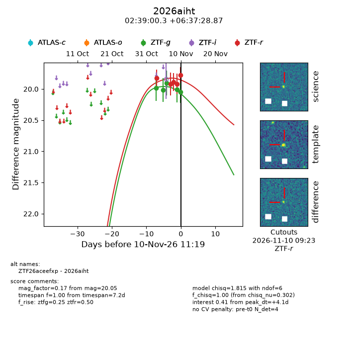
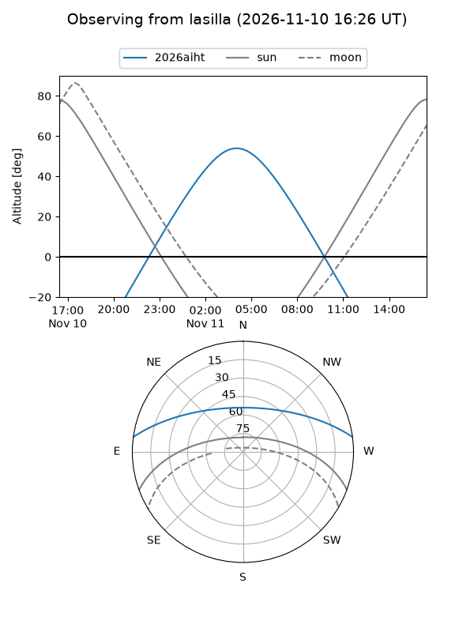
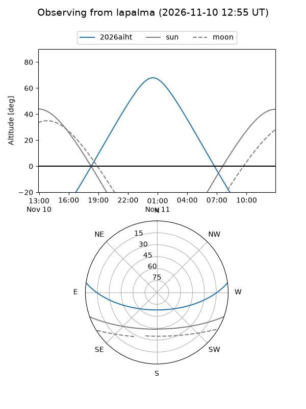
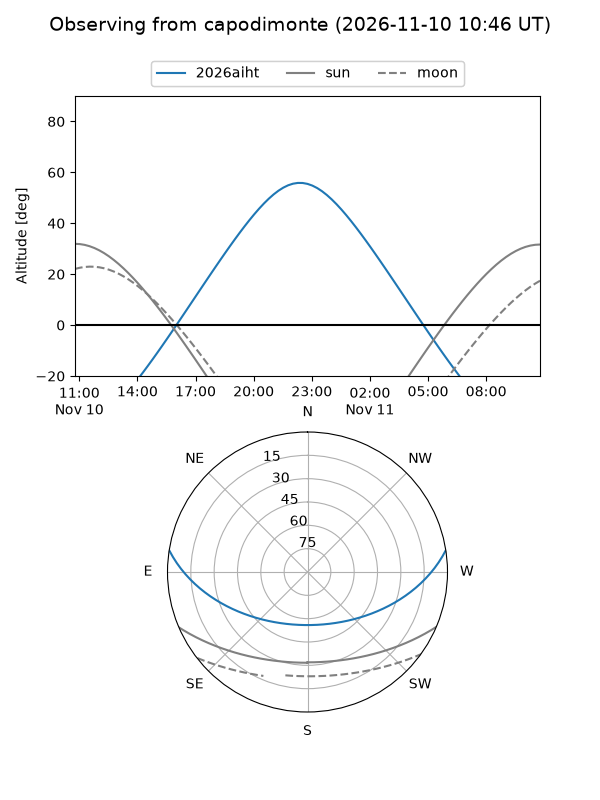
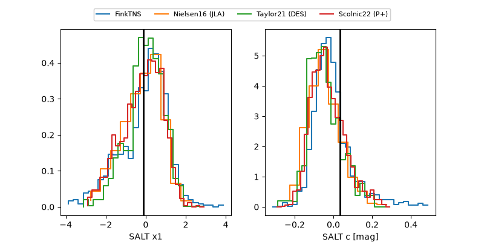

2026aiht
Target 2026aiht at 2026-11-10 11:22
Aliases and brokers:
FINK-ZTF: ztf.fink-portal.org/ZTF26aceefxp
Lasair-ZTF: lasair-ztf.lsst.ac.uk/objects/ZTF26aceefxp
ALeRCE-ZTF: alerce.online/object/ZTF26aceefxp
YSE-PZ: ziggy.ucolick.org/yse/transient_detail/2026aiht
TNS name: wis-tns.org/object/2026aiht
Direct TNS query: direct search
alt names
ZTF26aceefxp (ztf,fink_ztf)
2026aiht (tns,yse)
Coordinates:
equatorial (ra, dec) = 39.7512,+6.62469
equatorial (HMS+DMS) = 02:39:00.30,+06:37:28.87
galactic (l, b) = (164.4988,-47.37847)
Flags:
peak dt: +4.1
Photometry:
last ztfg=20.05, ztfr=19.78
5 ztfg, 5 ztfr detections
Lightcurve

Visibility



Additional plots
